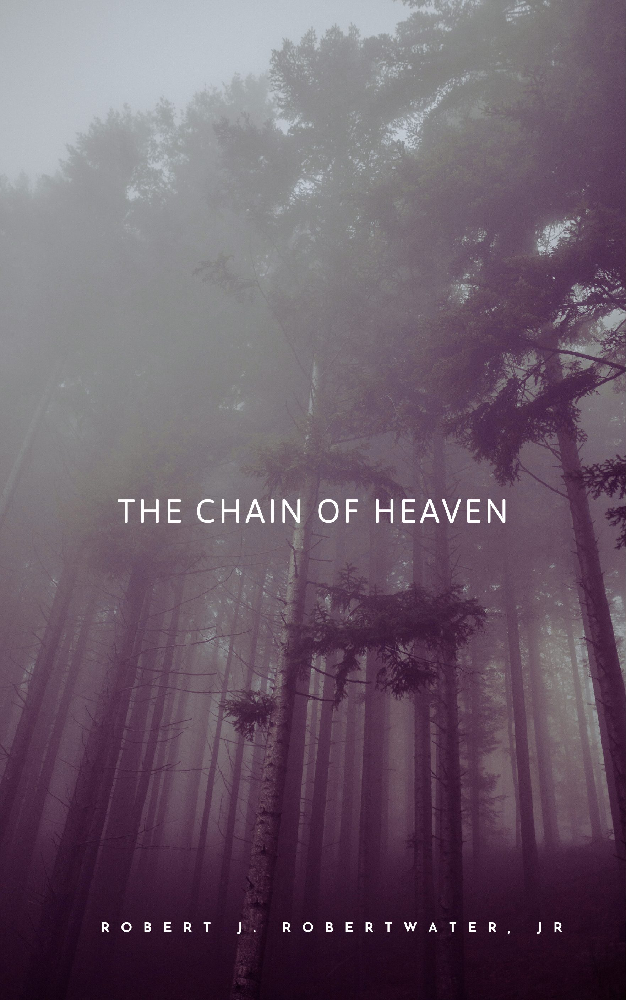
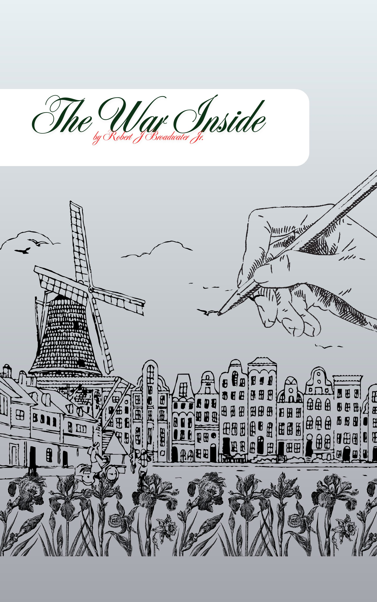
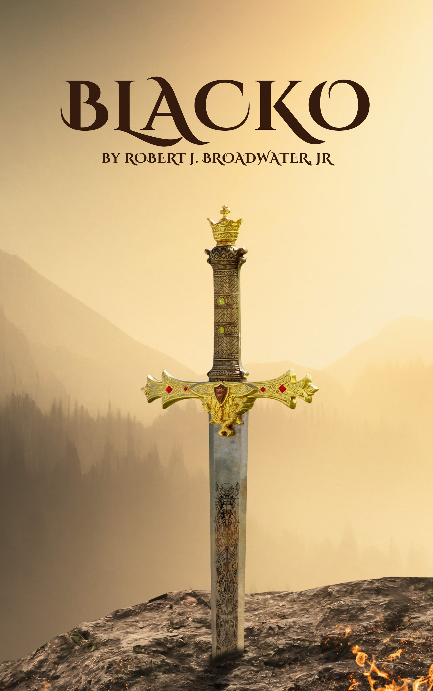
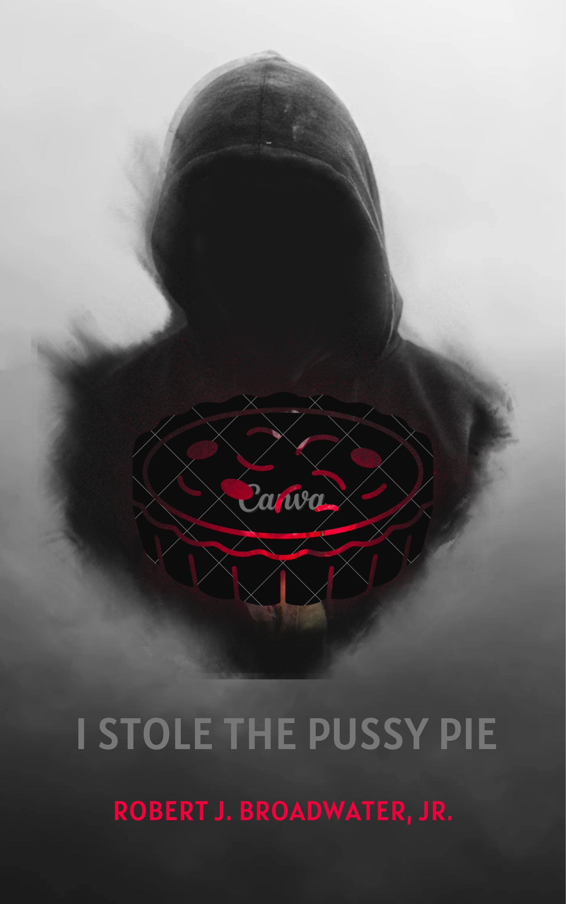
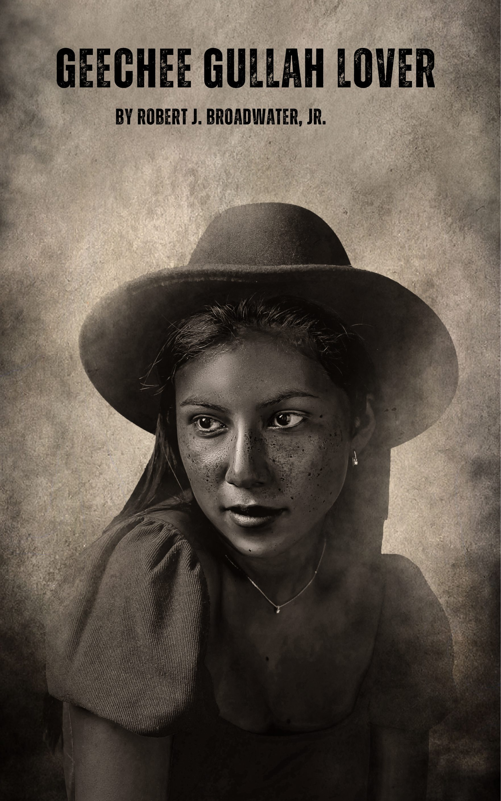

✦ Robert J. Broadwater Jr. ✦
Where the buried truth wakes, and the magic hides in plain sight.
Supernatural & Thriller

Supernatural Thriller
An earthquake splits a mountain. A golden cage emerges. And the town of Sable Ridge awakens something older than heaven itself.
Urban Fantasy
Dee is a sweet Georgia girl with a soft heart. Every three years, when the Red Moon climbs the sky, something ancient wakes inside her.
Sci-Fi Thriller
Leah was never supposed to be a hero. Then she found her grandfather’s encrypted files — and the neural link he left behind.
Spiritual Fable
She had everything life could offer — and still felt empty. A monk. A seven-day climb. A truth she never expected.
Literary & Historical Fiction

Historical Fiction
Private Elijah Brooks believed a uniform would make America see him differently. France, 1944. He was wrong about the uniform.
Memoir
Christine Broadwater didn’t just plant roses — she summoned them. A love letter to a mother who made drama bloom beautifully.

Martial Arts Fiction
In the mist-veiled hills of the Middle Kingdom, a swordsman moves like shadow. His blade is Redrum. His name is whispered, never spoken aloud.
Political Thriller
Recon. Assault. Tactics. Three operatives who lost everything. Their first mission: take down the senator who legalized hate.
Southern Fiction & Magic Realism

Southern Magical Realism
Miss Lacey bakes pies that carry truth inside them. One stolen slice — and a whole life changes.
Street Lit
Ex-cop. Retired pimp. Almost a junkie. The block don’t never sleep, and neither does his past.
Southern Comedy
Auntie Laverne ran her kitchen like it was the CDC. Two tests before you sat at her table. Jalen only passed one.
Spoken Word
Infantry. Airborne. Dog-face and decorated. A soldier’s story in verse — and the hardest war was the one inside.
Songs & Spoken Word
R&B / Poetry
R&B / Poetry
Original Song
Spoken Word
Members Only
The complete collection — including adult titles — is available to members. Enter your access password below.
Password provided by your membership.
All titles including adult fiction. For mature readers.
Grief / Drama
The words exploded before he could stop them. The courtroom froze. Three children asking questions no parent should ever have to answer.

R&B / Spoken Word
A low-country love song. She carries sweetgrass scent, South Carolina fire, and ancestors in her rhythm.
Songs / Poetry
How can I love you with a painted face? When all that we were just slipped out of place.
Adult Fiction
Inside The Blue Room, healing and pleasure meet, and shame has no seat at the table.
Adult Fiction
Morgana’s journey into self-discovery — learning to name what she wants, and finding the courage to reach for it.
Adult Drama
He reached for her phone just to silence the screen. What he read instead stopped his world.
Adult Romance
Mama’s voice was always there — the love you share ain’t always the love that’s meant for you.
The Author
Robert J. Broadwater Jr. is a storyteller whose work refuses to stay in one place. From the supernatural hills of Sable Ridge to the mist-veiled training halls of the Middle Kingdom, from a Tibetan mountaintop to a Sunday kitchen where Auntie Laverne is waiting — his fiction moves between worlds without losing its footing in the real.
His writing is rooted in Black Southern voice and experience, shaped by history, spirituality, desire, and the kind of humor that lives right next to grief. He writes the full range of being human — the sacred and the profane, the warrior and the lover, the mother in her garden and the soldier in his war.
He is currently building his catalog. This site is the beginning.